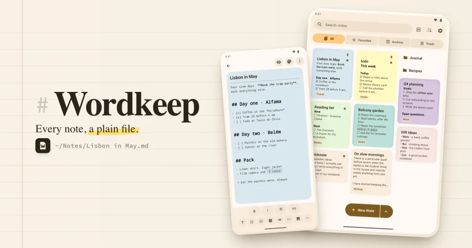
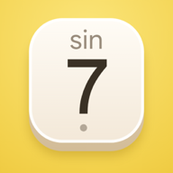
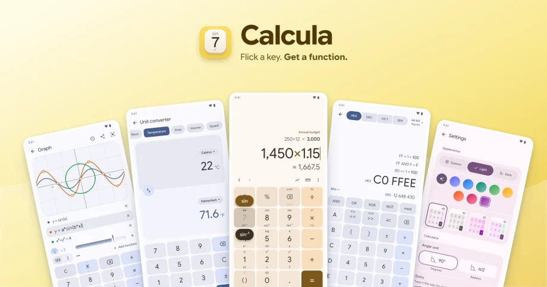
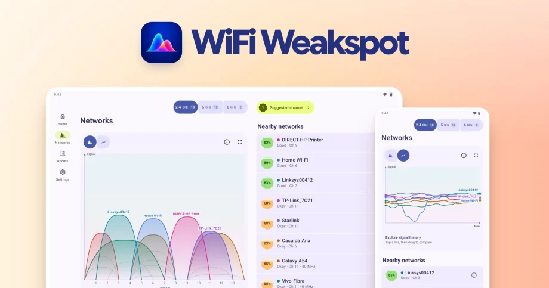
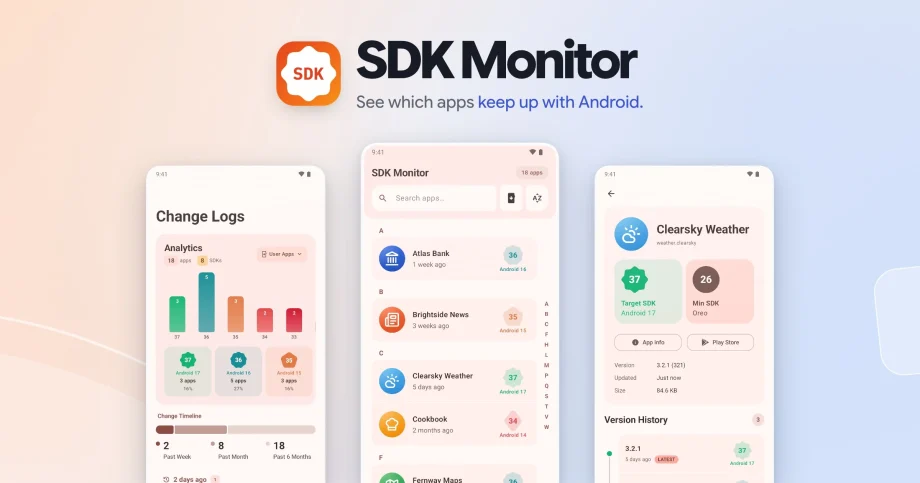
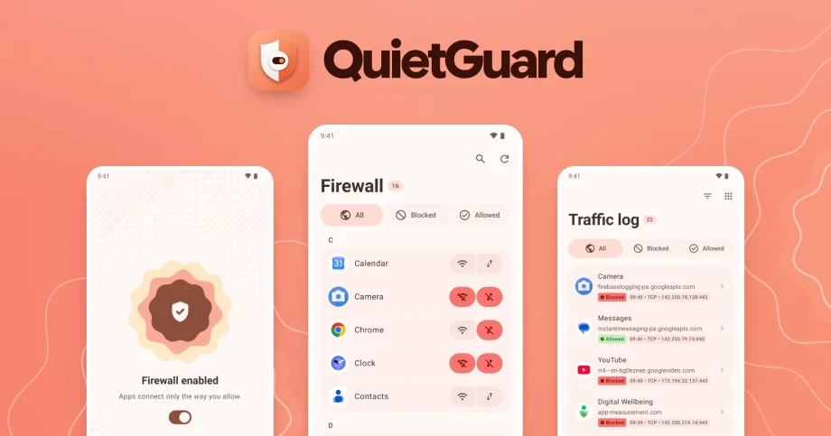
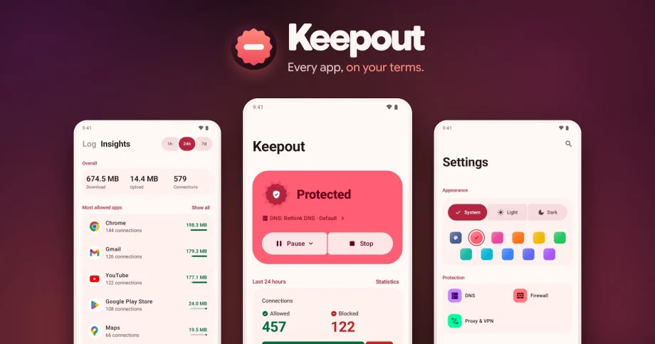
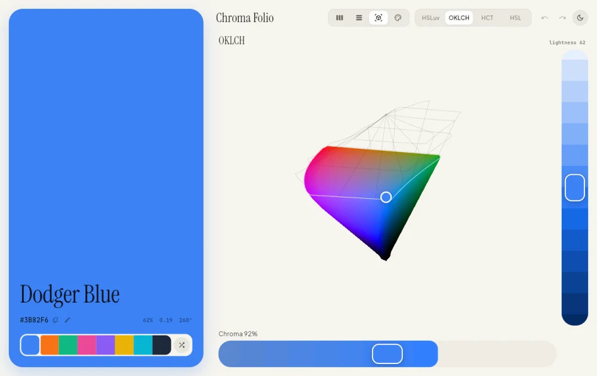
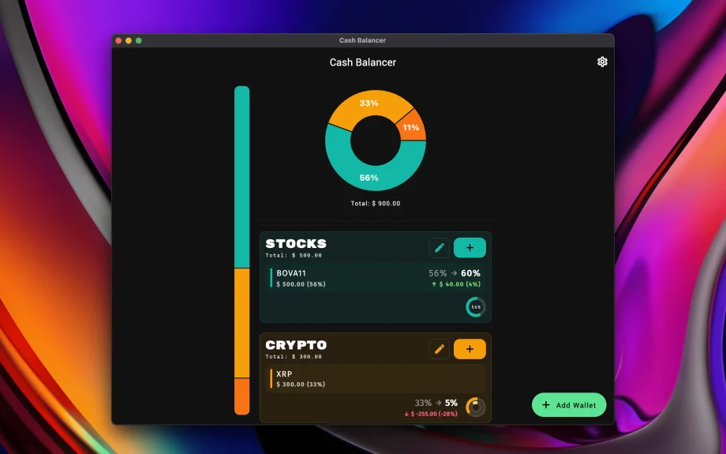

Calcula
Scientific calculator
Flick keys for scientific functions, plot equations, convert units, and reuse answers from your history.
A Markdown notebook, a scientific calculator, and four tools for exploring Android apps and networks.
About Kotlin Reforge






